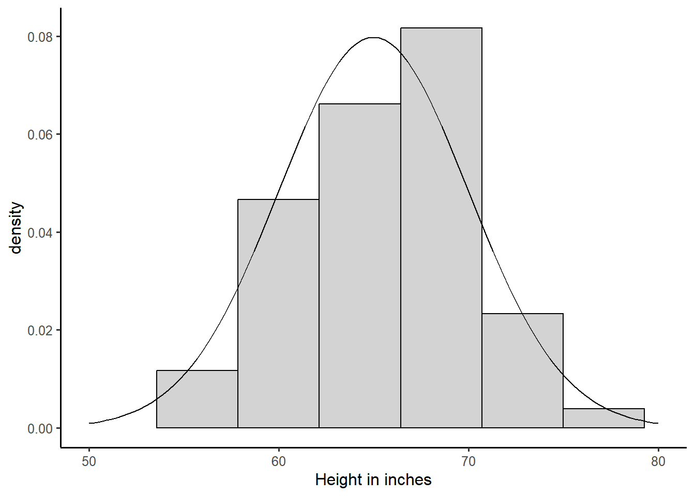

Week 5 Notes
STAT 251 Section 03
Lecture 7: Monday, Feb.5th 2024
Density Curves
We have discussed previously that a histogram is a good tool for visualizing a distribution for most variables. Nevertheless, it is crucial to recognize that the bars in a histogram depict discrete frequencies corresponding to distinct values, or in the case of continuous variables, to discrete intervals. In contrast, the true nature of a continuous variable involves a distribution function that is inherently continuous. Consequently, this distribution is more accurately represented by a smooth curve rather than discrete bars. We call such a curve a density curve and the density component can be interpreted as a continuous measure of “how often” a value occurs. We will talk more about the nature of density later when we discuss probability. For now, it is useful to know that a density curve is how we represent the distribution of a continuous variable in theory. The plot below gives a visual example of the difference between a density curve and a histogram for a continuous random variable \(X\)

The normal distribution
The density curve in the plot above is called a normal curve and represents a family of distributions called normal distributions. All normal distributions have the same general shape - a symmetric bell-shape curve. The mean is located where the peak is tallest. It also forms an axis of symmetry where both the left and right portions of the distribution are mirror images.
The normal distribution has two parameters that govern its shape:
The mean \(\mu\) determines where the center of the distribution is located on the real number line.
The standard deviation \(\sigma\) governs its shape by how spread out the values are.
We typically use the short hand notation \(x_i \sim N(\mu, \sigma)\) to denote that an observation \(x_i\) is normally distributed with population mean \(\mu\) and population standard deviation \(\sigma\).
The diagram below shows how \(\sigma\) relates to the shape of a normal distribution
- A normal distribution with small \(\sigma\) will be tall and skinny with a sharp peak. A normal distribution with a large \(\sigma\) will be short with a broad rounded peak, like a hill.
- From the plot above, we can see that two distributions with the same \(\sigma\) will have the same general shape, but if they have different \(\\mu\) the location of the center will be different. Thus changing the value of the mean \(\\mu\) will shift the position of the distribution.
The standard deviation \(\sigma\) and the mean \(\mu\) completely determine the shape of a normal distribution. As a result, the standard deviation is a natural measure of spread for normal-shaped distributions and we can approximate its value by eye. Take for example the density curve for a normal distribution with parameters \(\mu = 0\) and \(\sigma = 1\).

One standard deviation from the mean will always be the point on the curve where the slope transitions from increasingly steep to increasingly gradual. The red dot is plotted above the point at one standard deviation from the mean and indicates the position of this slope transition.
The density curve of a normal distribution at any point \(x\) is given by the function
\[ f(x) = \frac{1}{\sigma\sqrt{2\pi}}e^{\frac{-1}{2}\left(\frac{x-\mu}{\sigma}\right)^2} \]
We will not make direct use of this function in this class however, this function represents a key point in the mathematical work in probability and statistics regarding variables that exhibit normality
Why is the normal distribution important?
Many real variables have normal distributions. For example, most physical characteristics such as height, weight, length will have this distribution.
Normal distributions are often good approximations to many kinds of chance outcomes such as counting the number of heads in many tosses of a fair coin (more on this later).
Lastly, and most importantly, many statistical inference procedures that are based on normal distributions will still give good results for other roughly symmetric distributions.
The Empirical Rule
Although there are many different normal curves, they all have common properties. One of the most important is called the empirical rule (also called the 68-95-99.7 rule). The empirical rule states that for any approximately normal-shaped distribution with mean \(\mu\) and standard deviation \(\sigma\):
approximately \(68\%\) of the observations will have a value within 1 standard deviation of the mean
approximately \(95\%\) of the observations will have a value within 2 standard deviations of the mean
approximately \(99.7\%\) of the observations will have a value within 3 standard deviations of the mean

Consider the distribution of the height of female college athletes from a survey of college students in the state of Georgia.

Approximately, what proportion of the students will have a height between 60 and 70 inches?
Approximately, what proportion of the students will have a height \(\geq 70\) inches?
Approximately, what proportion of the students will have a height between 55 and 75 inches?
Standardizing Observations: The Z-score
From the empirical rule, we know that nearly all of the observations in a bell-shaped distribution will have a value within \(\pm 3\sigma\) of the mean. Therefore, we can use the property of the empirical rule of normal distributions to come up with a criteria for defining outliers that is specific to these types of distributions.
We can define an outlier as an observation whose value is more than \(3\sigma\) greater than the mean or \(3\sigma\) less than the mean.
More commonly, outliers are defined as an observation whose value is more than \(\pm 2\sigma\) from the mean
How can we easily tell how far an observation is from the mean?
First, it is important to note that the value of \(\sigma\) or \(s\) is affected by the units of the variable. For example, in the distribution of college student heights above, height is recorded in inches and the standard deviation of college student height was about \(s = 5\). However if, we have the same dataset and height was recorded in millimeters then the standard deviation would be much larger at \(s = 127\) because the units have smaller increment. This makes comparing normal distributions, or determining outliers dependent on the scale of the underlying variable.
To get around this, we can use something called a z-score. A z-score is a standardization of an observation from a normal distribution that can be directly interpreted as the number of standard deviations the observation falls from the mean. Mathematically a z-score is defined as
\[ z_i = \frac{\text{observation} -\text{mean}}{\text{standard deviation}} = \frac{x_i - \bar{x}}{s} \]
by subtracting off the mean and dividing by the standard deviation, we are performing a linear transformation to convert \(x\) into a new unit scale. If the original distribution of \(X\) is normal \(x_i \sim N(\bar{x}, s)\), then computing the z-score represents a rescaling of \(X\) such that
\[z_i = \frac{x_i - \bar{x}}{s} \sim N(\bar{x} - \bar{x}, s/s)\]
The distribution of \(z_i\) is a special case of the normal distribution called the standard normal distribution. The standard normal distribution has a mean of zero and a standard deviation of one and we often define this in symbols as \(z_i \sim N(0,1)\)
Lets consider the following example using data collected on the air pollution of countries in the European Union:
| Country | Abbreviation | C02 Emissions Per Capita (metric tons) |
|---|---|---|
| Austria | AUT | 8.0 |
| Belgium | BEL | 10.0 |
| Bulgaria | BGR | 6.0 |
| Croatia | HRV | 4.7 |
| Cyprus | CYP | 7.0 |
| Czech Republic | CZE | 10.7 |
| Denmark | DNK | 8.3 |
| Estonia | EST | 13.7 |
| Finland | FIN | 11.5 |
| France | FRA | 5.6 |
| Germany | DEU | 9.1 |
| Greece | GRC | 7.7 |
| Hungary | HUN | 5.1 |
| Ireland | IRL | 8.8 |
| Italy | ITA | 6.7 |
| Latvia | LVA | 3.6 |
| Lithuania | LTU | 4.4 |
| Luxembourg | LUX | 21.4 |
| Malta | MLT | 6.2 |
| Netherlands | NLD | 11.0 |
| Poland | POL | 8.3 |
| Portugal | PRT | 5.0 |
| Romania | ROM | 3.9 |
| Slovak Republic | SVK | 6.7 |
| Slovenia | SVN | 7.5 |
| Spain | ESP | 5.8 |
| Sweden | SWE | 5.6 |
| United Kingdom | GBR | 7.9 |
The mean of C02 emissions is \(\bar{x} \approx 7.9\) with a standard deviation of \(s \approx 3.6\). Compute the \(z-score\) for the C02 air pollution of the country Luxembourg. Is Luxembourg an outlier? If so, what does this mean in terms of its C02 pollution?
The z-score for Luxembourg is computed as \[z = \frac{21.4 - 7.9}{3.6} = 3.75\]
This indicates that the C02 emissions for the country Luxembourg is 3.75 standard deviations above the mean C02 emissions in the EU. Using the \(\pm 2s\) rule for determining outliers, we would conclude that the emissions for Luxembourg are an outlier relative to the emissions for the rest of the European Union. Thus by computing a z-score we can quickly discover how extreme an observation is relative to its distribution.
A note about linear transformations :
- A linear or affine transformation of a variable DOES NOT change the shape of its underlying distribution. Thus, converting \(x_i\) to \(z_i\) does not “convert” the distribution of \(X\) into a normal distribution, but instead, rescales the values \(x_i\) to have zero center and unit variance. If \(x_i\) comes from a highly skewed distribution the transformed z-scores will also have a skewed distribution. See plot below:
